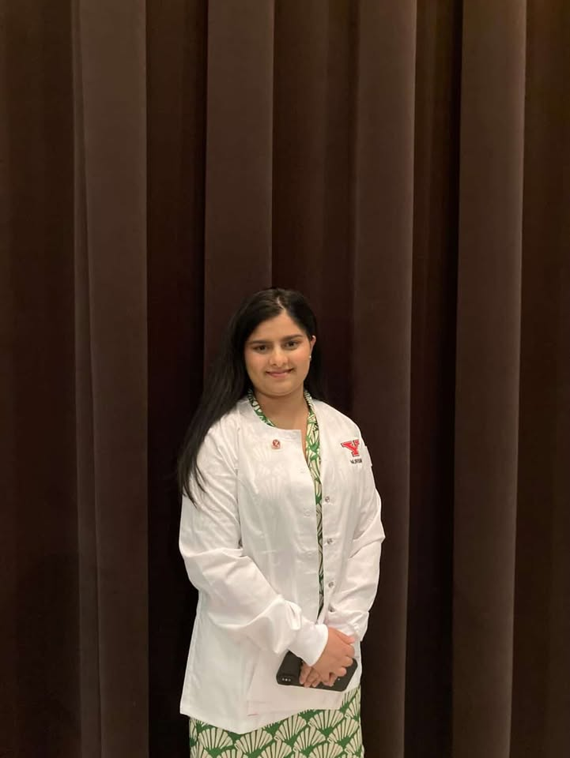

Welcome to My E-Portfolio
International Student from Nepal
Bachelor of Science in Nursing
Youngstown State University
This e-portfolio represents my journey through the nursing program at Youngstown State University and the growth I have experienced while earning my Bachelor of Science in Nursing. Over the past four years, I have developed the knowledge, clinical skills, and confidence needed to begin my career as a registered nurse.
Nursing school has challenged me in many ways, but it has also helped me grow both personally and professionally. Through clinical rotations, classroom learning, and hands-on experiences, I have learned the importance of compassion, critical thinking, teamwork, and patient-centered care.
I am very grateful for the support of my professors, clinical instructors, classmates, family, and the patients who trusted me to be part of their care. The experiences included in this portfolio highlight the education, achievements, and skills I have gained during my time at YSU. I hope it gives you a clear understanding of who I am as a future nurse and the dedication I bring to this profession.
Thank you for taking the time to review my portfolio.
Table of Contents
- Home
- Letter of Presentation
- Philosophy of Nursing
- Course Reflections
- Work Experience
- Other
- Future Decisions
- Resume
- Conclusion
Letter of Presentation
My name is Alisha Wagle, and I am an international student originally from Nepal. I completed my high school education in Nepal with a focus on Biology, where my interest in science and the human body first began. I have always been curious about how the human body functions and how healthcare professionals help people recover and maintain their health. This curiosity gradually grew into a strong desire to pursue a career in nursing.
One of my biggest inspirations to become a nurse is my aunt, who works as a nurse here in the United States. Seeing her dedication to patient care and the positive impact she makes in people’s lives motivated me to follow a similar path. Moving to a new country to continue my education was a major step for me, but it also gave me the opportunity to grow academically, personally, and professionally while working toward my goals.
Throughout my nursing education, I have remained committed to academic excellence and personal development. I am honored to be a member of Sigma Xi Xi Nursing Honor Society, Alpha Lambda Delta Honor Society, and the Sokolov Honors College. These achievements reflect my dedication to learning and my passion for becoming a knowledgeable and compassionate nurse.
As I continue my journey, I look forward to using my education and experiences to provide quality care and make a meaningful difference in the lives of others.
Philosophy of Nursing
My philosophy of nursing is built on compassion, respect, and caring for every patient. I believe nursing is not just about treating illnesses, but also about supporting patients emotionally, listening to their concerns, and helping them feel safe and comfortable. Every patient deserves to be treated with dignity, no matter their background or situation.
I also believe that learning and teamwork are very important in nursing. Nurses must keep improving their skills and knowledge to provide the best care, and they need to communicate well with other healthcare professionals to help patients. As a future nurse, I want to combine my knowledge, compassion, and dedication to make a positive difference in the lives of the people I care for.
Course Reflections
NURS 2610 Contemporary Nursing
This course introduced the historical, ethical, and theoretical foundations of nursing. I learned about the values, morals, and professional standards that guide nursing practice. The class also emphasized the importance of lifelong learning and professional development, giving me a strong foundation to understand the history of nursing while preparing me for the many aspects of the profession.
NURS 2643 Health Assessment (With Lab)
In Health Assessment, I learned the significance of performing thorough assessments on patients and our role in monitoring their health. We studied the head-to-toe assessment in detail, learning how to identify both normal and abnormal findings. Completing accurate assessments is essential for providing high-quality care. A highlight of this course was a group project on Italian culture, where we explored healthcare beliefs, diet, family roles, and mental health practices. This project strengthened my understanding of cultural competence in nursing. In the lab, I practiced assessment skills with classmates and eventually performed a full head-to-toe assessment on a family member, which gave me confidence and affirmation that nursing is the right career for me.
NURS 2646 Pathophysiology
Pathophysiology focused on abnormal processes in the human body and their causes. We learned about each body system, related diseases, and how the nursing process applies to care. This challenging course provided knowledge that continues to be foundational in my understanding of patient care.
NURS 2645 Professional Nursing 1 (With Lab)
Professional Nursing 1 helped me apply the nursing process in clinical settings. I learned communication, patient education, advocacy, and coordination within the healthcare team. Clinical experiences included learning patient transfers and basic care skills at Canfield Healthcare Center and then observing orthopedic care at Mercy Health St. Elizabeth’s. These experiences were my first opportunity to practice nursing skills and gain confidence in the clinical environment.
NURS 2650 Pharmacology
Pharmacology was one of my favorite courses, as it allowed me to understand medications, their effects, and safe administration practices. I learned the nursing responsibilities in drug therapy, including the importance of the “five rights” and the three checks before giving medications. This course reinforced patient safety and prepared me to administer medications responsibly.
NURS 3710 Nursing in the Community (With Lab)
This course emphasized the role of nurses in community settings, including patient education, family care, and home health. My group created a health fair presentation on vaping, highlighting its effects on adolescents. Clinical experiences included observing wound care, accompanying home health nurses, and performing assessments and vital signs under supervision.
NURS 3741 Professional Nursing 2 (With Lab)
In this course, I built on prior skills to focus on health promotion and care for acute and chronic illnesses. Clinical experiences on a medical-surgical unit allowed me to apply my knowledge, improve patient education skills, and practice IV placement, enhancing my confidence and independence as a student nurse.
NURS 3743 Professional Nursing 3 (With Lab)
Professional Nursing 3 introduced advanced nursing concepts, including neurological, endocrine, and hematologic disorders. Clinical rotation at Trumbull Memorial Hospital helped me develop therapeutic skills, direct patient care, and ethical decision-making. Shadowing experienced nurses also improved my understanding of time management and prioritization.
NURS 3749 Nursing Research
This course introduced nursing research and its importance in evidence-based practice. My group project explored nurse-to-patient ratios, including a 14-page report, presentation, and poster. We learned how to critically evaluate research and communicate findings effectively, which will be valuable in my future nursing career.
NURS 3731 Childbearing, Family, and Women’s Health
In this course, I focused on the care of women and newborns, learning about fetal development, pregnancy complications, labor, and postpartum care. Clinical rotations included labor and delivery, postpartum care, and newborn care, where I practiced assessments, medication administration, and parent education.
NURS 4832 Nursing Care of Children and Families
Pediatric nursing emphasized family-centered care for children from birth to 18 years. I learned about promoting health, managing illness, and addressing family needs. A notable project was “Toys in a Box,” where my group presented developmentally appropriate toys for infants and donated them to children in need. Clinical experiences included rotations in general pediatrics, the pediatric emergency room, NICU, and specialized centers.
NURS 4842 Mental Health Nursing
This course deepened my understanding of mental health nursing and psychiatric care. We learned therapeutic communication, crisis intervention, psychiatric medications, and treatment methods. Clinical rotations included adult and geriatric psych units, outpatient centers, and observation at an AA meeting. I completed an extensive patient case study that strengthened my assessment and care planning skills.
NURS 4844 Community Health Nursing
Community Health Nursing explored public health responsibilities, cultural considerations, and environmental and social factors affecting populations. My group completed a comprehensive community assessment of Liberty Township, including a windshield survey and online presentation. I also completed FEMA and COVID-19 contact tracing training, earning certificates to respond effectively to public health emergencies.
NURS 4840 Complex Care Nursing (With Lab)
This course was one of my favorites due to its complexity. I learned to manage high-acuity patients and coordinate care across multiple systems. Clinical rotation on the Coronary Medical ICU taught me about mechanical ventilation, tracheostomy care, and emergency procedures. I also observed a CABG surgery and gained valuable experience in a Level 1 trauma center. This course helped me grow both professionally and personally.
NURS 4852 Senior Capstone
Senior Capstone allowed me to demonstrate research, teamwork, and communication skills. My group worked on a case scenario simulation of a patient with exacerbating COPD, creating a presentation and NCLEX-style questions. This course reinforced clinical reasoning and collaboration skills.
NURS 4853 Nursing Transitions (With Preceptorship)
This course focused on leadership, management, and applying nursing skills in real-world settings. My 120-hour preceptorship on an Intermediate Care/Telemetry unit gave me hands-on experience in patient care, delegation, prioritization, and ethical practice, shaping me into a confident and competent nurse.
NURS 4855 Comprehensive Nursing Summary
This final course helped me identify my strengths and weaknesses, review essential nursing knowledge, and prepare for the NCLEX-RN. The ATI review, multiple practice exams, and the exit exam helped me build confidence and readiness for licensure.
Work Experience
Mental Health Nursing
During my Mental Health Nursing clinical, I completed a 10-page case study on a patient with Autism Spectrum Disorder (ASD) at the Behavioral Health Unit of Mercy Health St. Elizabeth’s Downtown Youngstown Hospital. The case study included the patient’s objective data, psychiatric and developmental history, precipitating factors, and relevant nursing diagnoses. Through this assignment, I gained a deeper understanding of ASD and how it affects communication, social interaction, and daily functioning. I explored individualized care strategies, including structured routines, tailored communication, and promoting independence. This project strengthened my assessment, critical thinking, and care planning skills and gave me confidence in working with patients with developmental and psychiatric conditions.
NURS 4852 Senior Capstone
In my Senior Capstone course during my final semester, I was required to write a scholarly paper on clinical nursing judgment. The assignment asked me to define clinical judgment, explain its importance, and reflect on a personal experience where I applied it in practice. For my paper, I focused on my goals as I begin my career as an ICU nurse. I discussed how clinical judgment will guide my decisions when caring for critically ill patients, including assessing rapidly changing conditions, prioritizing interventions, and collaborating with the healthcare team. Reflecting on my preceptorship experiences, I described how I have learned to make safe, evidence-based decisions under pressure and how I plan to continue developing these skills throughout my ICU career. This assignment helped me recognize the importance of ongoing critical thinking, assessment, and professional growth in providing high-quality care in a complex and fast-paced environment.
NURS 4840L Complex Care Nursing
In my Complex Care Nursing course, I created a PowerPoint on Traumatic Brain Injury (TBI). I researched its causes, symptoms, complications, and nursing interventions, including monitoring neurological status and supporting recovery in critical care. This project helped me apply theoretical knowledge to real patient care and strengthened my understanding of ICU nursing and evidence-based practices.
Pharmacology Honors Contract
For my Pharmacology Honors Contract, I completed a group project where we created a poster on the effects of polypharmacy. Our project explored how multiple medications interact in the body, potential adverse effects, and the risks associated with taking several drugs simultaneously, especially in older adults. This assignment allowed me to apply evidence-based research, work collaboratively with my peers, and communicate complex pharmacological concepts in a clear and visually engaging way. The experience strengthened my understanding of safe medication practices and the importance of monitoring patients for drug interactions.
Preceptorship
In my final semester, I completed my preceptorship in the CVICU, where I cared for critically ill patients with complex cardiovascular conditions. I gained hands-on experience managing patients recovering from cardiac surgeries, heart attacks, and other acute cardiac events. During this time, I practiced advanced nursing skills such as continuous monitoring, IV medication administration, and performing thorough patient assessments. Working closely with my preceptor, I learned how to prioritize care, make quick clinical decisions, and collaborate effectively with the interdisciplinary healthcare team. This preceptorship was an invaluable experience that strengthened my critical thinking, clinical judgment, and confidence in a high-acuity environment. I also learned the importance of patient-centered care, clear communication, and professionalism under pressure. This experience has prepared me to transition successfully into my career as an ICU nurse and reinforced my passion for caring for patients with complex and critical needs.
Other
My Support System Throughout Nursing School
Nursing school can be really tough, and having friends who are always there to support and encourage you makes a huge difference. My friends have been with me through the stressful moments, celebrated successes with me, and offered comfort when things felt overwhelming. Thanks to nursing school, I’ve met two incredible friends who I know will be in my life for years to come. Their support, motivation, and kindness have helped me grow both personally and academically. I am truly grateful for everything they have done and the positive impact they’ve had on my journey.
Sigma International Nursing Honor’s Society
I feel truly honored to have been inducted into Sigma International Nursing Honor’s Society through the Xi Xi Chapter at Youngstown State University. Nursing school has been challenging, and I have worked hard to excel in my studies, so it was rewarding to have that effort recognized. Being a member of Sigma allows me to connect with other dedicated nursing professionals and supports my growth in the profession. I am proud to be part of an organization that values excellence, leadership, and the advancement of nursing.
Future Decisions
Personal
As I prepare to graduate, I am excited to begin my career as a nurse and take every opportunity to grow both personally and professionally. I see each experience as a chance to learn, improve, and strengthen my skills. My goal is to fully engage in every aspect of my work, building confidence and competence as a registered nurse.
Professional
I hope to continue developing my clinical judgment, leadership, and patient-care skills while working in a fast-paced healthcare environment. My long-term goal is to work in intensive care, where I can care for critically ill patients and continue advancing my knowledge through real-world experience, evidence-based practice, and lifelong learning.
Resume
This section presents a short summary of my education, academic honors, and nursing interests.
- Education: Bachelor of Science in Nursing, Youngstown State University
- Background: International student from Nepal with a Biology foundation from high school
- Honors: Sigma Xi Xi Nursing Honor Society, Alpha Lambda Delta Honor Society, and Sokolov Honors College
- Career Goal: To begin my professional journey as a registered nurse and grow in ICU nursing
Conclusion
This e-portfolio represents my journey through nursing education, the growth I have experienced, and the goals I have set for my future career. It reflects my academic achievements, clinical experiences, projects, and personal commitment to compassionate and professional nursing care.
Through every course, clinical rotation, project, and patient interaction, I have learned lessons that will stay with me throughout my career. These experiences have helped shape me into a more confident, thoughtful, and dedicated future nurse.
Thank you for taking the time to review my portfolio and learn more about my journey, values, and future direction as a nurse.